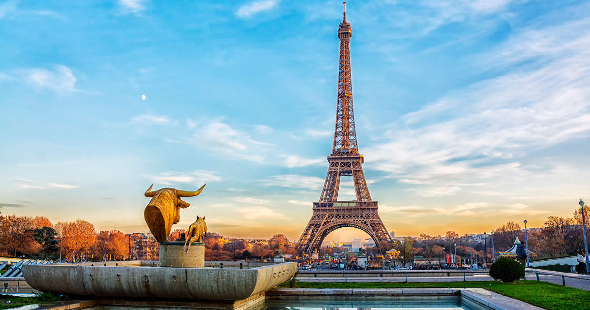

🇫🇷
Francia
Arte, gastronomía y elegancia
El país más visitado del mundo. París concentra museos de clase mundial, arquitectura monumental y una escena gastronómica sin igual. La Provenza, Bretaña y los Alpes ofrecen una Francia completamente distinta.